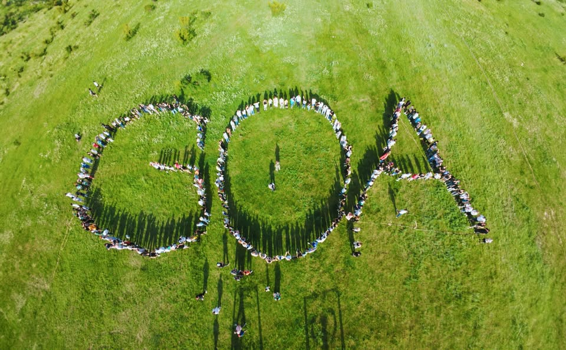
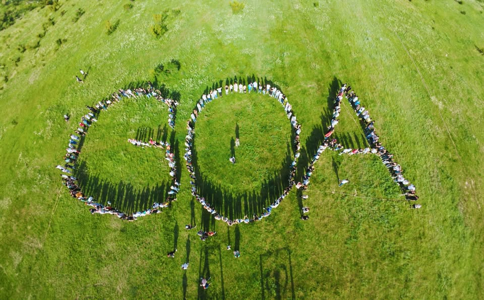

გამარჯობათ, მე ვარ საბა ძიძიკაშვილი, მე მოვხვდი გოას აკადემიაში დაახლოებით 2 თვის წინ, მე მაინტერესებდა პროგრამირება, ამიტომ მე მივწერე ბატონ ნიკა კეშელავას და გავხდი გოას სტიდენტი, დაახლოებით 1 თვეში ამის მერე მე გავხდი მინი-ლიდერი.
 
